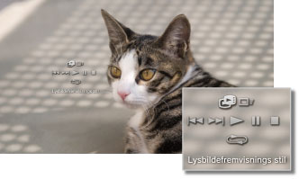

Foto > Vise bilder i en lysbildefremvisning
Vise bilder i en lysbildefremvisning
Hvert bilde vises i rekkefølge automatisk. Når du har valgt ikonet for en mappe eller et medium med bilder og har trykt på START knappen, starter lysbildefremvisningen.
Tips
- Lysbildefremvisningen kan også startes fra kontrollpanelet eller alternativmenyen for et bilde.
- Hvis lysbildefremvisningen ikke kan startes ved å trykke på START knappen, kan du utføre denne operasjonen fra kontrollpanelet.
Bruke kontrollpanelet for lysbildefremvisningen
Hvis du trykker på  knappen under en lysbildefremvisning, vises kontrollpanelet.
knappen under en lysbildefremvisning, vises kontrollpanelet.

 |
Lysbildefremvisnings stil | Velg én av fem lysbildefremvisningsstiler. |
|---|---|---|
 |
Lysbildefremvisnings hastighet | Velg én av tre hastigheter for lysbildefremvisningen: [Hurtig] > [Normal] > [Langsom]. |
 |
Forrige | Gå til forrige bilde. |
 |
Neste | Gå til neste bilde. |
 |
Spill | Start lysbildefremvisningen. |
 |
Pause | Sett lysbildefremvisningen på pause. |
 |
Stopp | Stopp lysbildefremvisningen. |
 |
Gjenta | Spill av lysbildefremvisningen flere ganger. |
Tips
Når (Lysbildefremvisnings stil) er satt til [Fotoalbum] eller [Fotoalbum 2], bruker du SIXAXIS™ trådløs håndkontrolls høyre stikke for å operere funksjoner som forstørre eller forminske bildestørrelsen eller justere lysbildefremvisningens hastighet.
Spille et slideshow mens du spiller musikk.
Du kan spille et slideshow og musikk samtidig.
1. |
Start avspilling av musikk under |
|---|---|
2. |
Trykk på PS knappen. |
3. |
Gå til |
 (Musikk).
(Musikk). (Foto), velg bildet eller mappen du ønsker å vise i slideshowet og trykk på START-knappen.
(Foto), velg bildet eller mappen du ønsker å vise i slideshowet og trykk på START-knappen.Tips
- Hvis du trykker på PS-knappen under samtidig avspilling, vises XMB™-menyen og du kan endre musikken eller bildene.
- For å avslutte må du stoppe avspillingen av slideshowet og musikken hver for seg. Etter å ha stoppet avspillingen, velger du lydsporet eller bildet som spilles og stopper avspillingen.
- Du kan ikke spille en Super Audio CD samtidig med slideshowet.
- Hvis
 (Innstillinger) >
(Innstillinger) >  (Musikkinnstilling) > [Output frekvens] er stilt inn til [44,1/88,2/176,4 kHz], kan du ikke spille av musikkinnhold samtidig som en lysbildevisning.
(Musikkinnstilling) > [Output frekvens] er stilt inn til [44,1/88,2/176,4 kHz], kan du ikke spille av musikkinnhold samtidig som en lysbildevisning.
Merknad
Super Audio CD-er kan ikke spilles av på enkelte PS3™-systemer. For mer informasjon, se [Typer plater som kan spilles av].